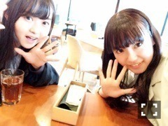
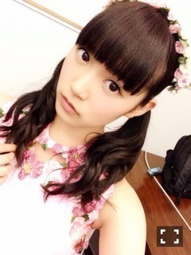
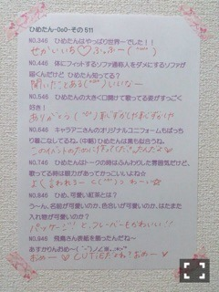

| 2015/04 24 Fri | ひめたん-OoO-その537 |
いきなりだけどクイズでーす☆
このポニーテールの子は
誰でしょーう？

わかるかな？
さて、アンダーライブが
終わってからも
ゆるゆる収録やら撮影やら
させていただいてます（＾ω＾）♪
今日は6月9日発売の
UTB+さんの撮影でした！
この前登場したばかりなのに
また載っちゃうなんて嬉しい！
なんということでしょう( ´•̥ω•̥` )♡
近くなったらまたお知らせするねぇ
ちなみに明日は
street JACK発売だからね☆
そして最近は
台湾・アンダーライブと
ばたばたしていて
その間にやりたかったことを
ひとつひとつ消化させてるの♪

万理華と久々のごはん！
サラダバー行きました（＾ω＾）
4時間もお喋りしてた♡
録画してた冬アニメをみて
やっと最終回を迎えたり
春アニメが始まったり
らじらー！初回で話題になった
「SLAM DUNK」も
最近読み始めたよ⊂( ˆoˆ )⊃
お料理もしたいなーと思ったり
あと読書なんかも。
やりたいことがいっぱいあるの！
時間が足りない！
みり愛ともお茶しなきゃだし♡
みんなはこの春から
はじめたこととかあるの？
アンダー曲歌衣装
ほんとは花冠orブレスレットも
一緒なんだよ♡

明日の夜はTBSラジオ
「JUNK バナナマンの
バナナムーンGOLD」
高山・西野・中元が出演します
聞いてね♪

 ステージからひめたんコール
ステージからひめたんコール
どのぐらい聞こえる？？？
＼ ひめたーん ／って
他のみんなと違う発音だから
よく聞こえる♡
最近広島には帰れましたか？
去年のお正月以来帰ってない......
どうなってるんだろう？
あれからまた何か新しいものできた？
好きな春ファッションを
教えて下さい！
春ファッションってか
スニーカーにハマってる♡♡
何にでも会うし、楽チンなの(＊´v`＊)
ひめたんが一番好きな時間は？
お風呂上がって、寝る前の
うだうだしてる時間かな！
翌日がオフの時なんかは尚更。
ひめたんの日記の
コメント欄下２ケタに46を踏んだ方へ
手書きでコメ返するコーナー
＼ ひめたん46 ／

いつもたくさんのコメント
ありがとうございます
アンダーライブの感想
たくさんありがとう♡
コメントの中にいくつかあった
「立場が人を作る」という言葉を見て
本当に私はこの期間に
たくさんのことを学んだなと改めて。

ついんてーるおそろっち
(＊´・ω・＊)
コメント(756)
2015/04/24 00:00